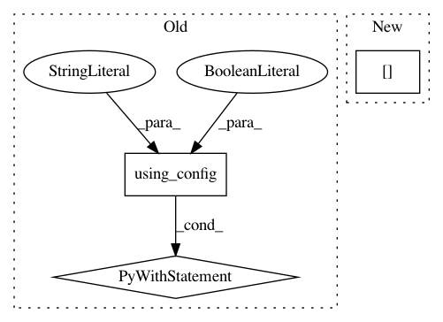

c565f7c9035308fda5e1850e0b9ffbb823cd36ff,chainerrl/agents/soft_actor_critic.py,SoftActorCritic,select_greedy_action,#SoftActorCritic#Any#Any#,293
Before Change
self.sync_target_network()
def select_greedy_action(self, obs, deterministic=False):
with chainer.no_backprop_mode(), chainer.using_config("train", False):
s = self.batch_states([obs], self.xp, self.phi)
if deterministic:
action = self.policy(s).most_probable.array
After Change
return list(cuda.to_cpu(batch_action))
def select_greedy_action(self, obs, deterministic=False):
return self.batch_select_greedy_action(
[obs], deterministic=deterministic)[0]
def act_and_train(self, obs, reward):
self.logger.debug("t:%s r:%s", self.t, reward)
In pattern: SUPERPATTERN
Frequency: 3
Non-data size: 3
Instances
Project Name: chainer/chainerrl
Commit Name: c565f7c9035308fda5e1850e0b9ffbb823cd36ff
Time: 2019-05-08
Author: muupan@gmail.com
File Name: chainerrl/agents/soft_actor_critic.py
Class Name: SoftActorCritic
Method Name: select_greedy_action
Project Name: chainer/chainercv
Commit Name: c297c965497eddf1eaa7c813c1d33db4e61c5494
Time: 2019-02-16
Author: 69guitar1015@gmail.com
File Name: chainercv/links/model/deeplab/deeplab_v3_plus.py
Class Name: DeepLabV3plus
Method Name: _get_proba
Project Name: chainer/chainerrl
Commit Name: bb400593d5aeccdccf5f827c1e30b0ea10774da7
Time: 2019-05-06
Author: muupan@gmail.com
File Name: chainerrl/agents/categorical_double_dqn.py
Class Name: CategoricalDoubleDQN
Method Name: _compute_target_values